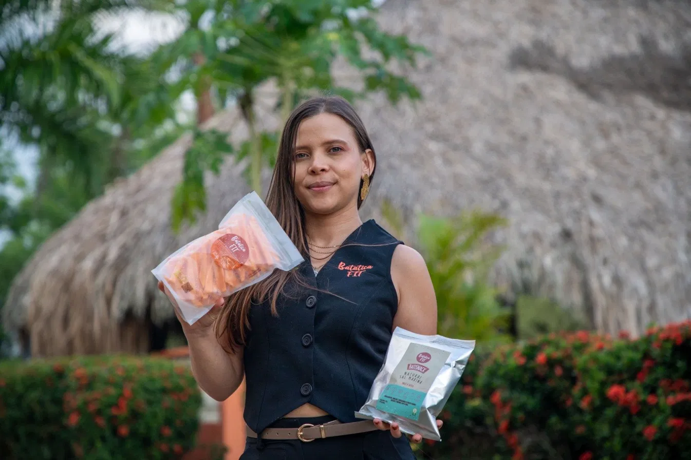
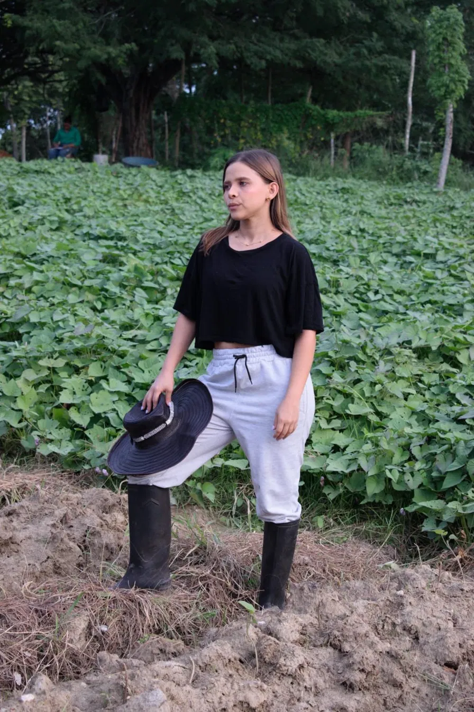
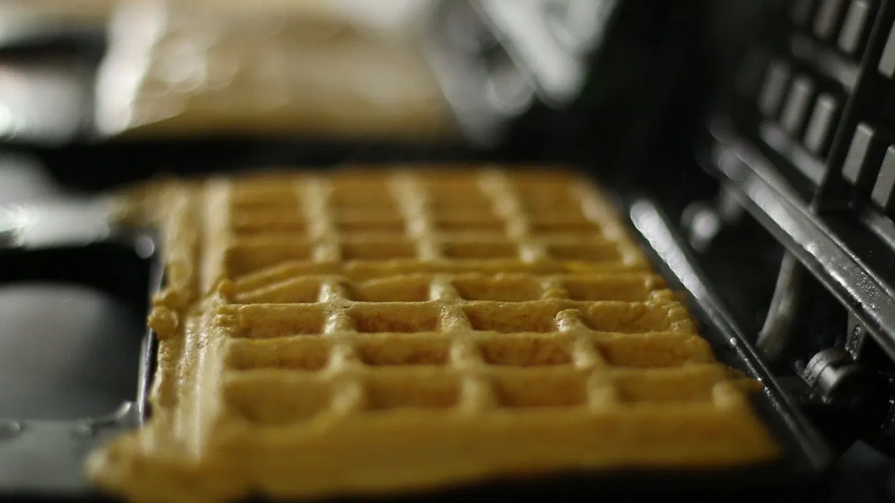
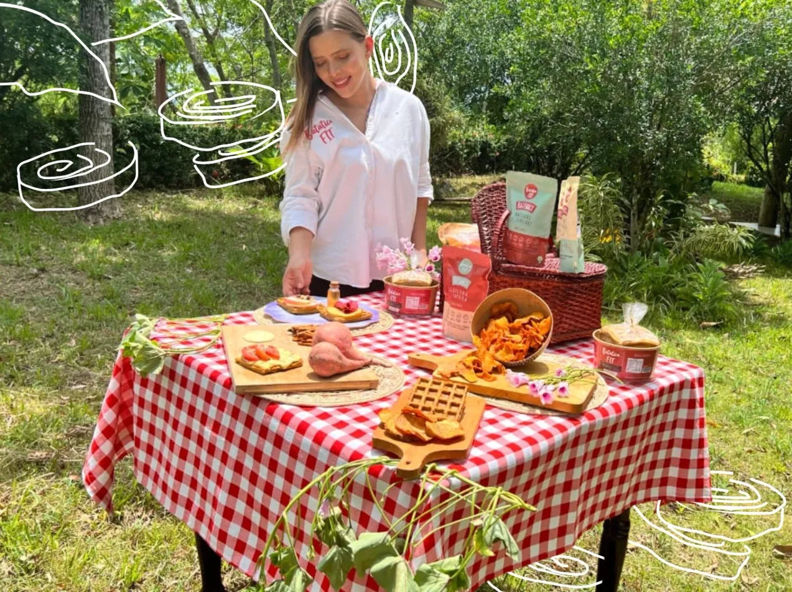

Cultivados con sabiduría ancestral de la comunidad indígena Zenú. Sin gluten, sin azúcares, veganos y deliciosos.

Ingredientes completamente naturales sin conservantes ni aditivos químicos. Calidad garantizada en cada producto.
Sin gluten, sin azúcar. Rica en fibra y nutrientes para una alimentación consciente y balanceada.
Apoyamos a la comunidad Zenú con prácticas sostenibles y respeto por el medio ambiente.
Sabor excepcional que no sacrifica la salud. Disfruta de cada bocado con calidad superior.
Clientes Satisfechos
Ciudades Principales
Colombiano
Año de Fundación

Diana Tous Bertel, creadora de BataticaFit, descubrió en la batata aurora la clave para transformar su salud y bienestar. Inspirada por superar enfermedades a través de una alimentación consciente, decidió compartir los beneficios de este superalimento con el mundo.
Somos aliados de los pequeños productores indígenas ZENÚ en la región Sucreña, integrándolos en nuestra cadena de suministro y contribuyendo al desarrollo local.
Conoce Más


Únete a miles de colombianos que disfrutan de waffles saludables y deliciosos